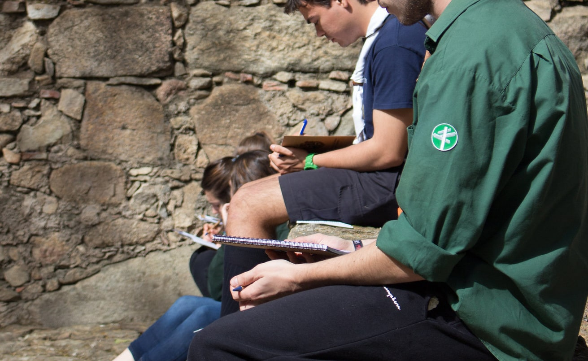

Si tienes entre 6 y 8 años, tu sitio es Castores
¿Sabes que el castor es uno de los animales más inteligentes del planeta? Podemos caminar por la tierra y nadar por el agua, pero lo más divertido es cuando hacemos presas en los ríos, juntando ramas, hojas y troncos. Es una obra difícil pero, al hacerlo todos juntos, ¡realmente no nos cuesta tanto!
¿Te gustaría hacer cosas como conocer el bosque, bañarte en un río transparente, aprender canciones, dormir en un saco o pintarte la cara como un payaso? Entonces, ¿a qué esperas? ¡únete a nuestra colonia de Castores!
Si tienes entre 9 y 11 años, tu sitio es Lobatos
¡Bienvenido Lobato! Ya teníamos ganas de contar contigo y explicarte los misteriosos secretos de los lobos. Con los ojos y los oídos bien abiertos, estamos siempre atentos al más pequeño ruido del bosque.
La vida en nuestra manada es una continua aventura: juntos construimos nuestros refugios entre las rocas, cazamos, acechamos sigilosamente a todos en la selva y sobretodo, ¡nos divertimos durante todo el día!
Pero en la manada también aprendemos a superar las dificultades, a cuidar de nosotros mismos y a ayudar a nuestros amigos.
¿Quieres vivir como en un campamento indio, bañarte en el río, aprender danzas tribales, construir un cohete o un barco vikingo? Entonces no te lo pienses más y únete a nuestra manada de Lobatos.


Si tienes entre 12 y 14 años, tu sitio es Exploradores
¿Aburrido? ¡Ven y descubre con nosotros la aventura! Levántate, coge tu mochila y prepárate para comenzar un trepidante viaje. Te esperan nuevos amigos, lugares desconocidos y grandes retos que no puedes dejar escapar.
Con la ayuda de los compañeros de tu unidad scout podréis montar un campamento, realizar travesías nocturnas por el bosque, dormir al aire libre o construir puentes de madera.
Buscarás tesoros perdidos, descifrarás pistas como Sherlock Holmes e incluso podrás convertirte en un gran actor de teatro interpretando tus propias obras ¡No te lo pienses más y únete a nosotros!
Si tienes entre 15 y 17 años, tu sitio es Pioneros
¿Quieres acción? Ahora ya puedes tener el mundo en tus manos. Seguro que alguna vez has querido descubrirlo, ¿no?
Los pioneros son auténticos especialistas en encontrar el lado salvaje y divertido de la naturaleza. ¿Podemos retarte a descubrirlas? ¡Ahora no puedes quedarte quieto, actúa!
A los pioneros los conocerás por sus ganas de disfrutar entre amigos, por sus excursiones de fin de semana, por su música, porque les encanta hacer travesías por las montañas y ¡por mucho más!
En la unidad de Pioneros podrás trabajar en proyectos medioambientales y colaborar con otras asociaciones y ONGs en proyectos de acción social. Hay muchas cosas que puedes hacer por los demás siendo pionero, ¡descúbrelas!


Si tienes entre 18 y 21 años, tu sitio es la Ruta
¡Es el momento de elegir tu camino! La ruta es una experiencia única, una forma de vivir distinta a cualquier cosa que hayas conocido. Ser ruta implica nuevos e importantes retos personales: comprometerse con los demás, luchar contra las injusticias, cooperar con los más débiles, en definitiva, transformar el mundo. ¡En los scouts tus propuestas no pasarán inadvertidas!
Si te unes a la Ruta, podrás colaborar en proyectos de solidaridad, en tu ciudad o en el extranjero y por diferentes asociaciones y ONGs. Podrás participar en proyectos de educación ambiental en Bolivia, programas educativos en República Dominicana o en proyectos de acogida para inmigrantes en tu ciudad. Además, también puedes divertirte recorriendo el Camino de Santiago o en encuentros nacionales e internacionales de jóvenes con tus mismas inquietudes. ¿Te atreves a unirte a nuestra Ruta?